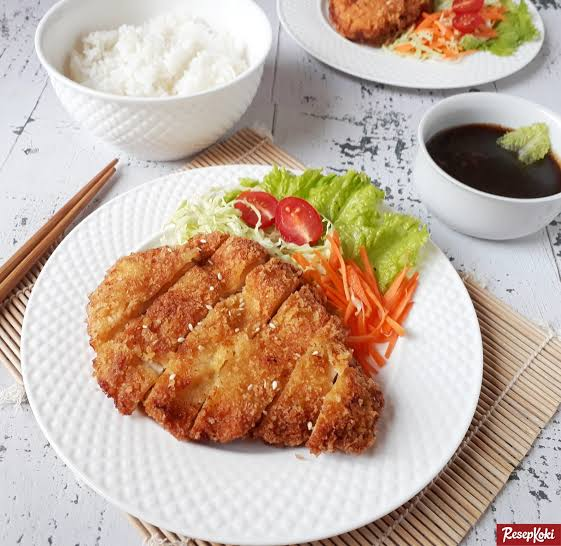

Chicken Katsu

Description
Chicken katsu is Japanese-style fried chicken.
This is my family recipe and can also be used to make tonkatsu by using pork cutlets instead of chicken.
Serve with white rice and tonkatsu sauce.
Ingredients
- 4 skinless boneless chicken breasts
- A reasonable amount of salt
- A reasonable amount of pepper
- 2 cups of all-purpose flour
- 1 egg, beaten
- 1 cup of panko
- 1 cup of cooking oil
Steps
- Gather all ingredients
- Season chicken breasts on both sides with salt and pepper
- Place flour, beaten egg, and panko into separate shallow dishes
- Coat chicken breasts in flour, shakes off any excess flour, dip into egg, press into panko until well coated on both sides
- Heat oil in large skillet over medium-high heat. Place chicken into oil, and fry until golden brown.
- Transfer into paper towel lined plate to drain.
- Serve with hot white rice and enjoy.
Back to Recipes